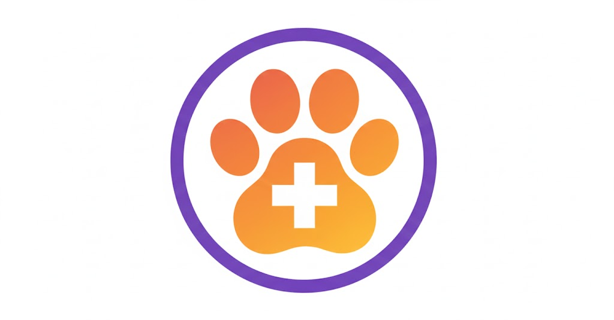
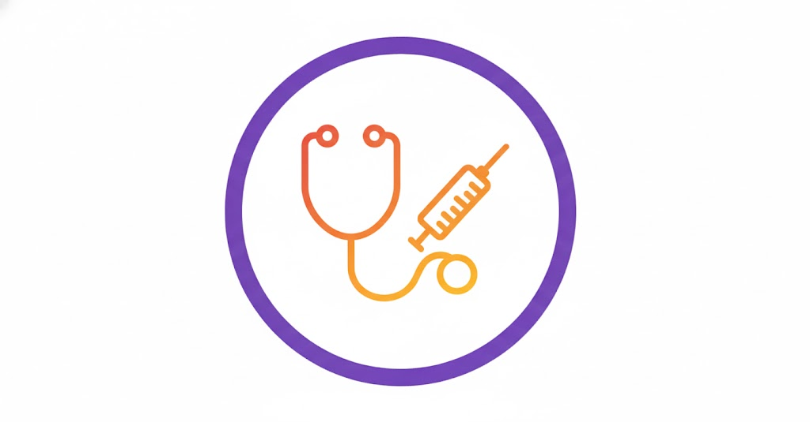
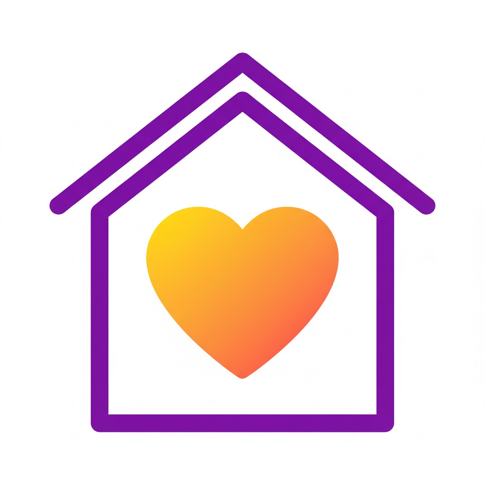

Sobre o ResgataPet
O ResgataPet é uma solução inovadora desenvolvida para conectar animais abandonados a uma rede de proteção, veterinários e lares temporários. Nosso objetivo é reduzir o tempo que um animal passa na rua através da tecnologia.

Resgate Rápido
Geolocalização para encontrar animais próximos.

Rede Veterinária
Parceria com clínicas para atendimento inicial.

Adoção Responsável
Processo seguro para encontrar um novo lar.
Apoie o ResgataPet 💜
Sua contribuição ajuda a manter o projeto online!
Chave Pix (Email):
apoie@resgatapet.com.brAceitamos qualquer valor!